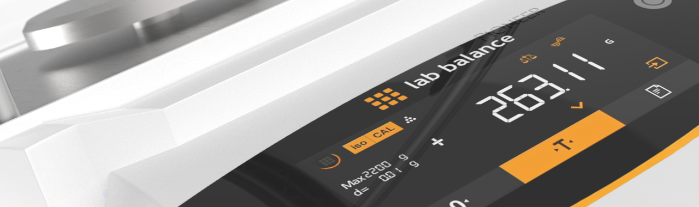
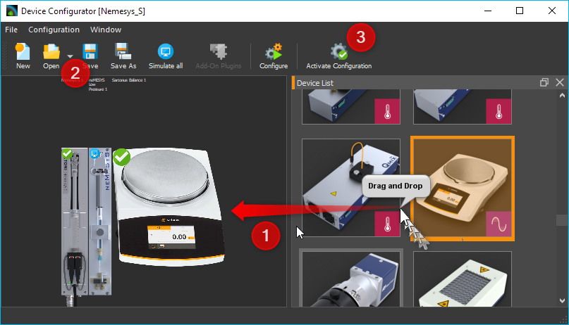
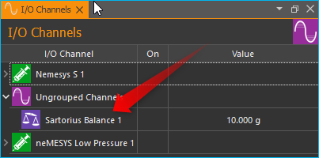
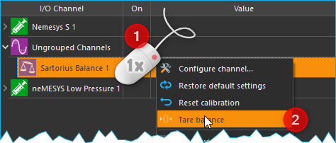
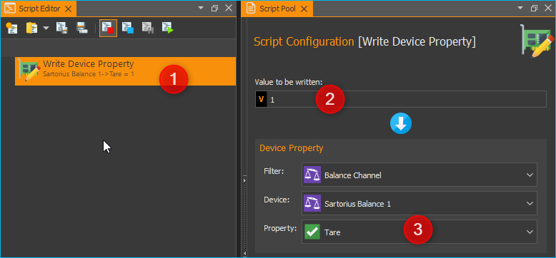

12. Balances Plugin

12.1. Introduction to Balances Plugin
This plugin is for integrating external laboratory balances into the software. The following devices are currently supported:
Manufacturer |
Supported Devices |
|---|---|
Sartorius |
Entris, ED-, GK- and GW-scales |
12.2. Configuration of Sartorius Scales
In order for the scale to work optimally with the software, please set the following parameters on the device:
12.3. Adding a scale to a CETONI Elements device configuration
In the Device Configurator, simply add a scale to the current device configuration using drag & drop or double-click ❶. Then save the device configuration ❷ and activate it by clicking the Activate Configuration button ❸.

12.4. Operation
12.4.1. Display / Read the values
For each balance that has been added to the device configuration, an analogue input channel is displayed in the list of I/O channels. In the picture below, this is the Sartorius Balance 1 channel.

This analogue channel shows the current value measured by the scale in the Value column. Like any other analogue channel, this channel can be added in the graphical logger or CSV logger or read in the script.
12.4.2. Tare balance
To tare the balance, right-click on the channel ❶ and then select ❷ from the context menu.

The taring of the scale can also be carried out in a script. To do this,
add the script function Device Functions –> Write Device Property ❶ to
the script. Configure this function so that the value 1 ❷ is written to
the property Tare ❸ of the scale channel (see figure below).
